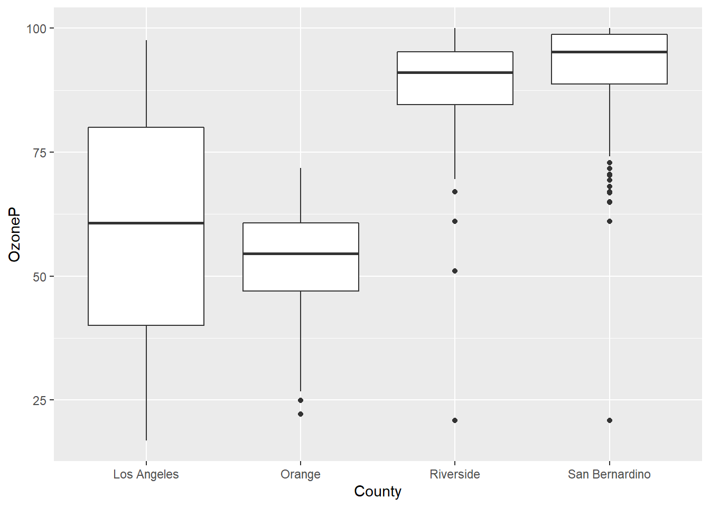
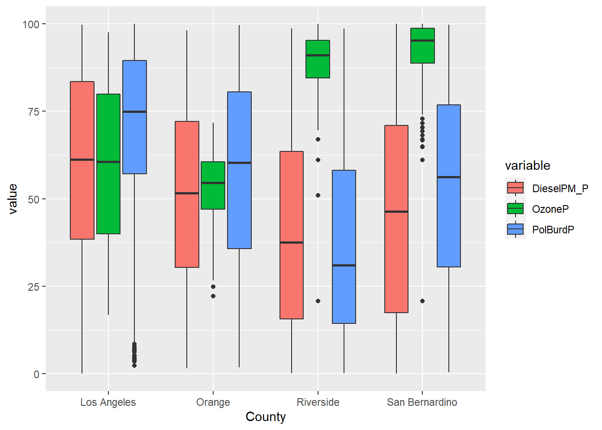
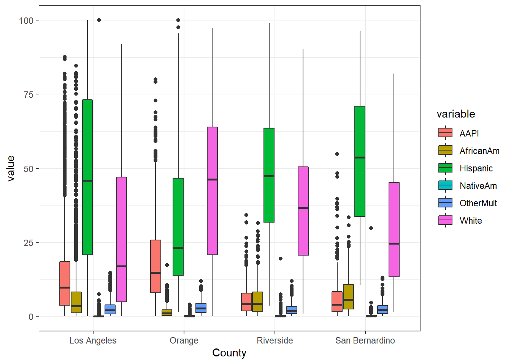
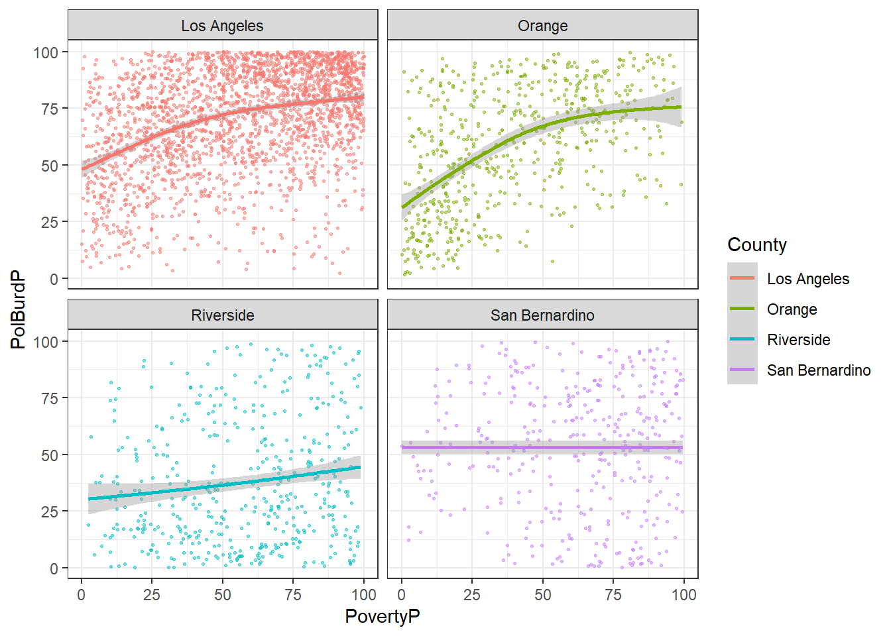
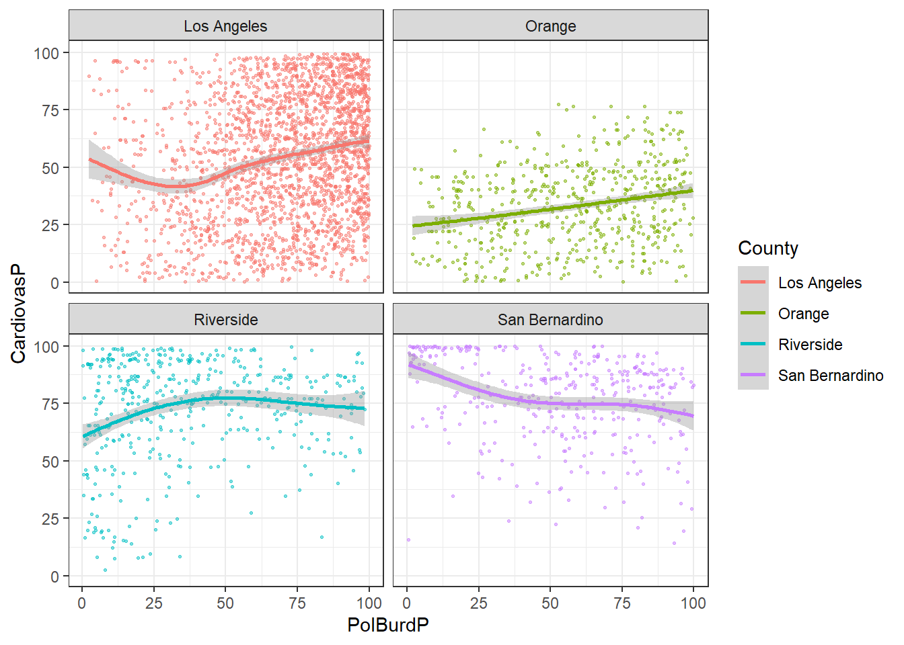
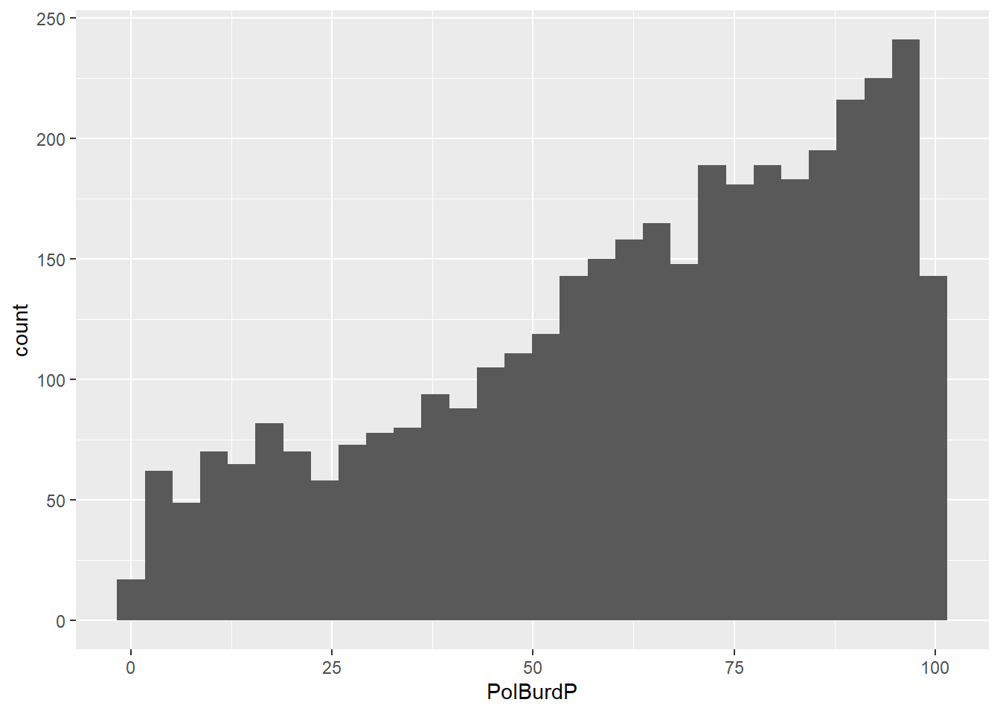
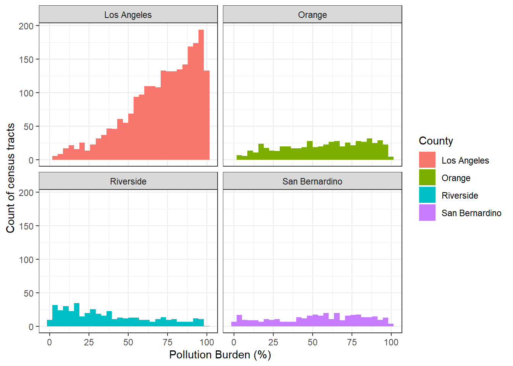
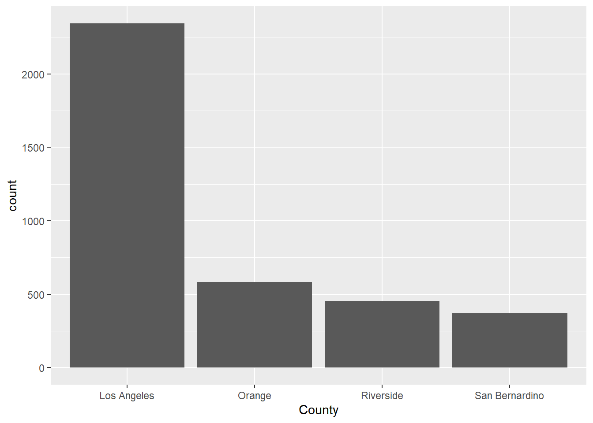
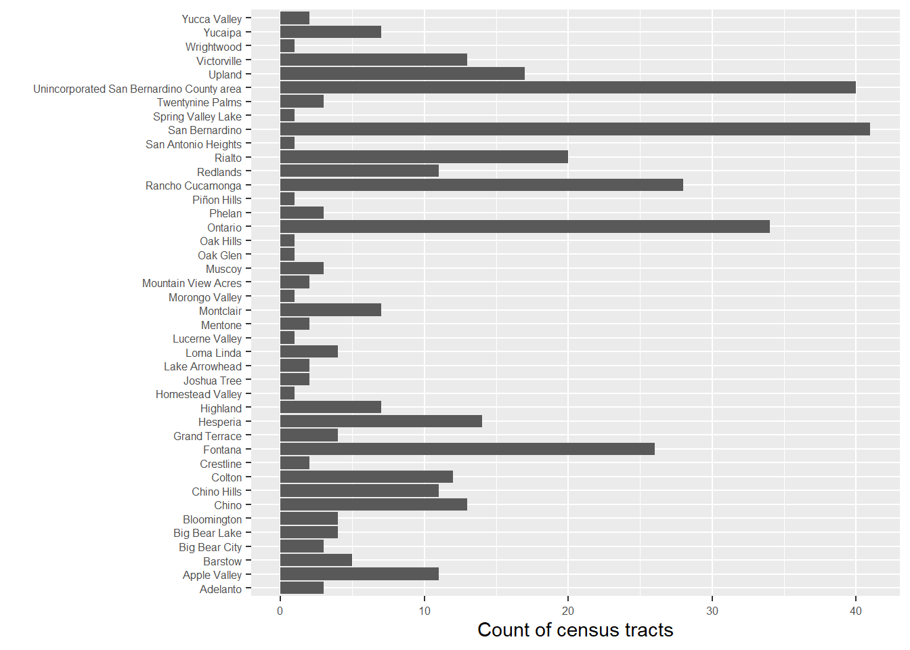

9 EJ - Exploratory Analysis Case Study
Today we will practice visualization-based analysis of EJ data using R.
Today we will be iterating on a visualization-based analysis as shown in the conceptual model in Figure 9.1

9.1 Load and Import Steps
Load the libraries we’ll be using today.
Import the SoCalEJ dataset again, if you don’t have it already loaded.
URL.path <- 'https://raw.githubusercontent.com/RadicalResearchLLC/EDVcourse/main/CalEJ4/CalEJ.geoJSON'
SoCalEJ <- st_read(URL.path) %>%
st_transform("+proj=longlat +ellps=WGS84 +datum=WGS84")9.2 Basic Visualization
Let’s compare some variables by county to see how the counties are different.
Pick your own variable to plot - do not pick OzoneP which is my variable for now.
Use filter(...) to only keep values above or equal to zero. We don’t want to include census tracts that are missing data that have -999 values.
Figure 9.2 shows the distribution of ozone exposure percentages by county.

There are clear differences in ozone by county, with the Inland counties having higher ozone than the coastal counties. The differences are statistically significant.
Unfortunately, a wide dataset is not great at displaying multivariate information in ggplot. A bit of tidying is needed to display multiple variables.
9.3 Tidy and Transform
I am going to demonstrate a few somewhat fancy data manipulation techniques. This is somewhat advanced database programming. While this is very helpful for visualization, it goes beyond the things I expect you to learn for this course.
This code does three things.
- Remove the geometry using
st_set_geometry(value = NULL) - Transform the data table from wide to long using
pivot_longer(...) - Remove values below zero using
filter()
# select socioeconomic indicators and make them narrow - only include counties above 70%
SoCal_narrow <- SoCalEJ %>%
st_set_geometry(value = NULL) %>%
pivot_longer(cols = c(5:66), names_to = 'variable', values_to = 'value') %>%
filter(value >=0)Let’s compare the SoCalEJ and SoCal_narrow datasets using head().
head(SoCalEJ)Simple feature collection with 6 features and 66 fields
Geometry type: POLYGON
Dimension: XY
Bounding box: xmin: -117.874 ymin: 33.5556 xmax: -117.7157 ymax: 33.64253
CRS: +proj=longlat +ellps=WGS84 +datum=WGS84
Tract ZIP County ApproxLoc TotPop19 CIscore CIscoreP
1 6059062640 92656 Orange Aliso Viejo 3741 9.642007 12.1028744
2 6059062641 92637 Orange Aliso Viejo 5376 10.569290 14.3343419
3 6059062642 92625 Orange Newport Beach 2834 3.038871 0.6807867
4 6059062643 92657 Orange Newport Beach 7231 6.538151 5.8497226
5 6059062644 92660 Orange Newport Beach 8487 8.873604 10.4009077
6 6059062645 92657 Orange Newport Beach 6527 6.033648 4.7402925
Ozone OzoneP PM2_5 PM2_5_P DieselPM DieselPM_P Pesticide
1 0.05165298 65.36403 9.445785 43.88301 0.14536744 50.13068 0.00000000
2 0.05219839 66.80772 9.785209 46.89484 0.07372588 27.41755 0.00000000
3 0.04827750 55.38270 10.433417 52.03485 0.03478566 12.40821 0.06496406
4 0.04901945 58.23273 10.013395 49.29683 0.03594981 12.90604 0.00000000
5 0.04863521 56.96329 10.565404 52.63223 0.07701293 28.73678 0.00000000
6 0.04863521 56.96329 10.329985 51.28811 0.04047264 14.58619 0.00000000
PesticideP Tox_Rel Tox_Rel_P Traffic TrafficP DrinkWat DrinkWatP
1 0.00000 293.8420 41.44786 999.0182 57.7125 177.3831 5.907331
2 0.00000 681.0703 57.65191 1051.9778 61.2250 312.7169 25.939803
3 22.58621 1557.6400 74.05601 874.8193 49.5000 332.6654 32.284251
4 0.00000 1349.2300 70.69267 1169.7532 67.4250 332.6654 32.284251
5 0.00000 1889.5133 78.03201 1383.9867 74.9500 332.6654 32.284251
6 0.00000 1589.1400 74.44361 1025.2790 59.5750 332.6654 32.284251
Lead Lead_P Cleanup CleanupP GWThreat GWThreatP HazWaste HazWasteP
1 18.450498 10.737240 0.0 0.000000 0.0 0.000000 0.280 46.80344
2 9.898042 3.730309 0.0 0.000000 0.0 0.000000 0.280 46.80344
3 14.263664 6.830498 4.5 40.836133 2.0 14.311805 0.150 26.67108
4 5.594984 1.600504 0.0 0.000000 0.5 2.722896 0.210 37.68365
5 16.777373 9.061122 0.0 0.000000 7.5 39.448780 0.395 60.22502
6 12.086059 5.343415 0.7 9.593132 2.0 14.311805 0.100 16.63799
ImpWatBod ImpWatBodP SolWaste SolWasteP PollBurd PolBurdSc PolBurdP Asthma
1 7 66.73667 0 0.00000 30.50123 3.724194 18.95457 21.70
2 7 66.73667 2 52.89805 35.23480 4.302163 29.71998 21.74
3 8 72.15456 0 0.00000 35.68847 4.357555 30.77785 14.93
4 6 58.69383 0 0.00000 30.97653 3.782228 19.87554 10.33
5 2 23.87652 2 52.89805 39.48486 4.821094 41.44368 13.88
6 3 33.15834 2 52.89805 32.98028 4.026885 24.04480 10.51
AsthmaP LowBirtWt LowBirWP Cardiovas CardiovasP Educatn EducatP
1 11.2786640 4.45 37.2337696 9.74 27.5049850 1.0 1.771703
2 11.3908275 3.50 16.2176033 8.72 18.8310070 8.4 35.876993
3 3.7263210 1.18 0.2950988 5.41 1.8569292 -999.0 -999.000000
4 0.9845464 5.39 61.9450860 4.46 0.3988036 2.0 5.859276
5 2.7542373 2.86 7.6597383 5.43 1.9192423 3.7 14.781068
6 1.0343968 4.64 42.1991275 4.65 0.4860419 0.0 0.000000
Ling_Isol Ling_IsolP Poverty PovertyP Unempl UnemplP HousBurd HousBurdP
1 1.1 7.375829 20.0 34.208543 3.0 17.113483 19.9 62.420786
2 4.4 33.942347 12.9 16.821608 2.6 11.868818 19.5 60.925222
3 0.0 0.000000 9.5 8.982412 0.9 1.145237 14.5 35.817490
4 3.9 30.694275 6.9 4.170854 2.6 11.868818 8.5 8.504436
5 5.0 37.664095 12.3 15.326633 4.0 30.882353 18.9 58.225602
6 1.0 6.266071 11.5 13.517588 -999.0 -999.000000 14.8 37.477820
PopChar PopCharSc PopCharP Child_10 Pop_10_64 Elderly65 Hispanic White
1 24.958604 2.5890185 13.2375189 10.9864 81.7696 7.2441 16.4662 63.2184
2 23.683405 2.4567389 11.7750882 13.2812 61.9792 24.7396 22.0238 55.2455
3 6.722867 0.6973798 0.2647504 5.9280 49.6471 44.4248 5.6104 89.6260
4 16.664505 1.7286508 4.9167927 7.9657 67.7361 24.2982 4.4530 63.9331
5 17.743511 1.8405788 5.8119012 10.4866 72.3224 17.1910 8.8488 82.0785
6 14.444279 1.4983412 3.3787191 11.0311 68.4388 20.5301 3.8302 74.7664
AfricanAm NativeAm OtherMult Shape_Leng Shape_Area AAPI
1 4.9452 0.0000 3.6087 5604.596 1467574 11.7616
2 1.3765 0.0000 3.5900 6244.598 2143255 17.7641
3 0.3881 0.0000 1.4467 6803.947 2048571 2.9287
4 0.0000 0.3042 6.0987 26448.643 18729420 25.2109
5 0.0000 0.0000 1.1076 10964.108 4361037 7.9651
6 0.2911 0.0000 0.8733 9833.066 5754643 20.2390
geometry
1 POLYGON ((-117.7178 33.5569...
2 POLYGON ((-117.7166 33.6003...
3 POLYGON ((-117.8596 33.6074...
4 POLYGON ((-117.7986 33.6059...
5 POLYGON ((-117.8521 33.6073...
6 POLYGON ((-117.8269 33.6063...head(SoCal_narrow)# A tibble: 6 × 6
Tract ZIP County ApproxLoc variable value
<dbl> <dbl> <chr> <chr> <chr> <dbl>
1 6059062640 92656 Orange Aliso Viejo TotPop19 3741
2 6059062640 92656 Orange Aliso Viejo CIscore 9.64
3 6059062640 92656 Orange Aliso Viejo CIscoreP 12.1
4 6059062640 92656 Orange Aliso Viejo Ozone 0.0517
5 6059062640 92656 Orange Aliso Viejo OzoneP 65.4
6 6059062640 92656 Orange Aliso Viejo PM2_5 9.45 The SoCal_narrow dataset has taken the 60+ columns from SoCalEJ and condensed them into a single column indicating the variable and another column indicating the value for that variable. This is very useful for grouping and visualizing by category of information.
Now let’s display a box plot with three pollution variables simultaneously using this narrow dataset as shown in Figure 9.3. We again use filter(), but we combine it with the %in% operator to select multiple variables to display.
SoCal_narrow %>%
filter(variable %in% c('OzoneP', 'DieselPM_P', 'PolBurdP')) %>%
ggplot(aes(x = County, y = value, fill= variable)) +
geom_boxplot()
Cool! Now we are seeing some interesting differences.
9.3.1 Exercise 1.
- Create a boxplot that displays five simultaneous variables by County, either by adding two new variables and/or replacing the existing variables. I recommend showing the percentage values that end in P.
- Choose a different
theme() - Show a box plot of the six racial and ethnic variables - Hispanic, White, AfricanAm, NativeAm, OtherMult, and AAPI. It should look something like Figure 9.4

9.3.2 Explore the Dataset
Data visualization isn’t just a final product. To get to the final product usually requires doing significant visual exploration to reveal information and knowledge.
Let’s walk through a few examples of methods to explore the data.
9.3.2.1 Scatter plots
Is there a relationship between a dependent and an independent variable or 3? Scatter plots and fits help to examine that.
Figure 9.5 investigates poverty as an independent variable with the pollution burden indicator by county.
SoCalEJ %>%
filter(PovertyP >= 0) %>%
ggplot(aes(x = PovertyP, y = PolBurdP, color = County)) +
geom_point(size = 0.5, alpha = 0.5) +
geom_smooth() +
theme_bw() +
facet_wrap(~County)
Very interesting dataset here. Poverty percentage in a census tract increases pollution burden in Orange, LA, and Riverside County but has no impact in San Bernardino. Riverside is the least pollution burdened on average, while both LA and Orange County have the highest pollution burden.
Let’s look at one other scatter plot of estimated pollution burden and a health outcome.
SoCalEJ %>%
filter(PolBurdP >= 0 & CardiovasP >= 0) %>%
ggplot(aes(x = PolBurdP, y = CardiovasP, color = County)) +
geom_point(size = 0.5, alpha = 0.5) +
geom_smooth() +
theme_bw() +
facet_wrap(~County)
Very strange here. Orange County has a positive relationship, but the other counties have non-linear relationships between these two variables.
9.3.2.2 Exercise 2.
- Generate a hypothesis of a causal relationship that you can test. Does variable X cause variable Y to increase/decrease?
- Prepare a four-county scatter-plot of your selected variables you think may have a causal relationship.
- Examine the results. Is there a relationship? Does it vary by county?
9.3.2.3 Histograms
Histograms are useful ways to explore a distribution of values.
The basic histogram is shown in Figure 9.7. The distribution of high pollution burden census tracts is skewed right towards higher values (i.e., worst scores).
SoCalEJ %>%
filter(PolBurdP >= 0) %>%
ggplot(aes(x = PolBurdP)) +
geom_histogram() #+
#theme_bw() +
#facet_wrap(~County)
Now let’s make that prettier and add a facet_wrap() by county as shown in Figure 9.8. I’ll also fix the axis labels using the labs() function to name them real names.
SoCalEJ %>%
filter(PolBurdP >= 0) %>%
ggplot(aes(x = PolBurdP, fill = County)) +
geom_histogram() +
theme_bw() +
facet_wrap(~County) +
labs(x = 'Pollution Burden (%)',
y = 'Count of census tracts')
Now, we can clearly see very big differences in census tract counts and distributions of the pollution burden variable. LA County has a massive distribution of highly burdened census tracts.
9.3.2.4 Exercise 3.
- Choose a variable you think is interesting and make a four-county histogram plot of it.
- Is there a story that you can start to craft with your histogram?
9.3.3 Bar and Column plots (column is usually better)
Basic example of a bar plot is shown in Figure 9.9.

There are more census tracts in LA than the other counties, because far more people live in LA than the other counties.
We can try to put the places in there, but it gets messy as shown in fig-Bar2 when looking at San Bernardino places. I’ve switched them to the y-axis to make it horizontal and made the font text smaller using
SoCalEJ %>%
filter(County == 'San Bernardino') %>%
ggplot(aes(y = ApproxLoc)) +
geom_bar() +
theme(axis.text = element_text(size = 6)) +
labs(y = '', x = 'Count of census tracts')
Note that geom_bar() works well with categorical variables, but doesn’t like continuous and numerical values.
9.3.4 Exploration and Improvisation
In this section, we are going to follow your interests to generate visualizations improvisationally. Hopefully there will be minimal struggle.